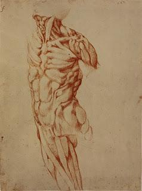

Art Historical and Biomedical Analysis of Michelangelo’s Ecorche
a. Artist/Group/Tribe
Michelangelo Buonarroti, an Italian sculptor, painter, architect, and poet of the High Renaissance, is renowned for his mastery in depicting the human form. His work, "Ecorche," illustrates his deep understanding and appreciation for human anatomy. Michelangelo's studies of anatomy were a result of his numerous dissections of cadavers, which informed the anatomical precision found in his art.
b. Historical and Socio-Cultural Context (Time-frame)
Created during the Italian Renaissance, Michelangelo’s works emerged in a context where art was undergoing a resurgence in terms of the classical ideals of beauty and harmony. This period, spanning from the 14th to the 17th century, was characterized by a flourishing of arts, science, and humanism. Artists returned to studying human anatomy, which helped them create more lifelike representations.
c. Symbolism and/or Iconography
The "Ecorche" emphasizes the musculature of the human body, serving as both an artistic and a scientific exploration of the human form. This illustration showcases Michelangelo’s fascination with the divine nature of humanity. The peeling away of skin to reveal underlying muscles symbolizes an uncovering of truth or deeper knowledge.
d. Stylistic Significance (Elements of Art/Principles of Design)
Michelangelo’s "Ecorche" uses clear lines and contrast to highlight muscularity, demonstrating his mastery of line and form. The balanced composition draws focus to the torso, emphasizing anatomical accuracy. The textural detail and proportion exhibit Renaissance ideals of realism and anatomical correctness.
e. Social/Cultural Inequities
During the Renaissance, access to artistic education and anatomical study was limited, largely available only to the wealthy and to men. Moreover, dissection of cadavers faced significant resistance from religious groups, thus restricting anatomical studies to a select few.
f. Description of Disease & Etiology
Michelangelo's anatomical studies frequently involved depictions of the normal human form. However, in examining such detailed musculature, artists like Michelangelo contributed to understanding abnormalities like muscle wasting or hypertrophy, possibly inadvertently uncovering conditions like muscular dystrophies.
g. Pathology Signs/Signifiers of Illness
Artworks like the "Ecorche" help highlight deviations from normative muscular development, enabling early recognition of signs such as muscle degeneration. While not depicting a specific ailment, these detailed studies function as a comparative basis for identifying pathological conditions.
h. Treatment
In Michelangelo’s time, medical understanding was rudimentary. Treatments for muscle-related ailments were largely speculative. Today's insights into such conditions are supported by developments in physiotherapy and genetic research, offering more tangible solutions.
i. Social Determinants of Illness
During the Renaissance, illness was often interpreted through religious or superstitious lenses rather than scientific ones. Factors like socioeconomic status and access to education heavily influenced an individual's ability to receive medical care or education about diseases.
j. References and Citations
1. Hartt, Frederick. "Michelangelo's Anatomy: Art, Anatomy, and the Renaissance." Journal of the History of Art.
2. Gilbert, Creighton, and Frederick Hartt. "Michelangelo's Notebooks: The Art and Biography."
3. Kemp, Martin. "The Human Image: Art, Anatomy, and Medicine." Scientific American.
4. Vasari, Giorgio. "Lives of the Artists: Michelangelo Buonarroti."
5. Hirst, Michael. "Learning and Teaching in the Italian Renaissance."